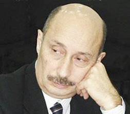

АЗЕРБАЙДЖАН. КОНЕЦ ВТОРОЙ РЕСПУБЛИКИ
Послесловие
Жанр этой книги - не научная история, не мемуары, а просто повествование участника и очевидца событий. Может, рассказанное мной ближе к "свидетельским показаниям"? Или к исповеди? Я рассказал (написал), вы, если у вас хватило терпения, выслушали (вернее, прочитали). После того, как я высказался, любезный читатель, считайте, что меня уже нет. Теперь вы - судья, вы даете оценку. Мои близкие друзья, прочитавшие мой рассказ первыми, сказали, что я сам выставляю себя неудачником в политике, ибо показываю, как постоянно уступал и проигрывал. Я отвечаю им, что я - не политик. Политик - человек, который стремится к власти, должности, хочет управлять, принимать решения, вершить судьбами людей. В Азербайджане такие люди, дабы преуспеть, обязаны быть аморальными. Быть таким я не умею. Всю жизнь я был чужд честолюбию, никогда не стремился повелевать. Моя задача была - учить, советовать, указывать путь. А уж дело других - принимать или отвергать. Как видно из моего рассказа, мой народ все время отвергал мои советы. Поэтому он там, куда пришел. Если он счастлив этим, то, видимо, это его удел. Если нет, то есть веская причина задуматься и провести тяжкую работу по переоценке "национальных ценностей".
Я не думаю, что сейчас, когда многие виновники трагедии народов Южного Кавказа все еще действующие лица на политической арене, можно написать обоснованную архивными документами историю. Но много мемуаров. Много заявлений о собственной роли различных деятелей. Много живых свидетелей. Их рассказы совокупно воссоздают общую картину. Мой рассказ тоже служит этой цели. Я не претендую на самую объективную историю. Моя История - субъективна. Это моя история. Я видел события таковыми. По мне, официальная и оппозиционная версия истории этих лет, ныне скармливаемые населению, просто мифы с сугубо утилитарной целью - еще раз обмануть народ и воспользоваться им для взлета на политический Олимп.
Мой рассказ разрушает «табу»: нельзя писать о зверствах, чинимых толпой и преступниками из «наших». Ответ прост: толпа преступна (это - научное определение), а у преступника нет национальности. Посмеют ли написать о зверствах, совершенных армянской толпой и «своими» боевиками армянские историки? Если мы хотим выбраться из заколдованного круга враждебности, то обязаны сделать это.
По мне, «национальность» должна нести в себе созидательный потенциал. Если же этим понятием прикрываются преступники, то какая разница, преступления совершаются человеком, считающим себя армянином, или азербайджанцем? Он - преступник, это его главная и единственная характеристика. Национальность преступника не имеет абсолютно никакого значения.
Читатель заметит, что в моей жизни в описываемый период были невзгоды и опасность. Я выстоял потому, что у меня были крепкие тылы. Были живы любящие меня родители. Жена и дети оберегали меня. Я в неоплатном долгу перед ними. У меня были верные друзья, которые точно так же стойко переносили общие наши тяготы. Я беспредельно признателен им.
Наконец, помогали мне выстоять все те писатели и ученые, которых я читал и полюбил, у которых я учился и поклоняюсь им. Их пример вдохновлял меня все эти годы, был камертоном моего самого строгого судьи - моей совести.
Я не думаю, что сейчас, когда многие виновники трагедии народов Южного Кавказа все еще действующие лица на политической арене, можно написать обоснованную архивными документами историю. Но много мемуаров. Много заявлений о собственной роли различных деятелей. Много живых свидетелей. Их рассказы совокупно воссоздают общую картину. Мой рассказ тоже служит этой цели. Я не претендую на самую объективную историю. Моя История - субъективна. Это моя история. Я видел события таковыми. По мне, официальная и оппозиционная версия истории этих лет, ныне скармливаемые населению, просто мифы с сугубо утилитарной целью - еще раз обмануть народ и воспользоваться им для взлета на политический Олимп.
Мой рассказ разрушает «табу»: нельзя писать о зверствах, чинимых толпой и преступниками из «наших». Ответ прост: толпа преступна (это - научное определение), а у преступника нет национальности. Посмеют ли написать о зверствах, совершенных армянской толпой и «своими» боевиками армянские историки? Если мы хотим выбраться из заколдованного круга враждебности, то обязаны сделать это.
По мне, «национальность» должна нести в себе созидательный потенциал. Если же этим понятием прикрываются преступники, то какая разница, преступления совершаются человеком, считающим себя армянином, или азербайджанцем? Он - преступник, это его главная и единственная характеристика. Национальность преступника не имеет абсолютно никакого значения.
Читатель заметит, что в моей жизни в описываемый период были невзгоды и опасность. Я выстоял потому, что у меня были крепкие тылы. Были живы любящие меня родители. Жена и дети оберегали меня. Я в неоплатном долгу перед ними. У меня были верные друзья, которые точно так же стойко переносили общие наши тяготы. Я беспредельно признателен им.
Наконец, помогали мне выстоять все те писатели и ученые, которых я читал и полюбил, у которых я учился и поклоняюсь им. Их пример вдохновлял меня все эти годы, был камертоном моего самого строгого судьи - моей совести.
Дальнейшая судьба главных участников
Наджаф Наджафов, после падения власти НФА занялся общественной деятельностью. Человек, имеющий несомненные заслуги перед азербайджанской журналистикой, пользовался большим уважением народа. Стал одним из учредителей, совместно с Сабитом и Хикметом, одного из самых эффективных НПО. Заболел болезнью крови, оперировался в Германии, однако облегчение было временным. Его кончину искренне оплакивали не только журналисты, но и вся демократическая общественность Азербайджана.
Сабир Рустамханлы, процветает при всех режимах и президентах. Рьяно защищает идею тюркизма, которая, хотя несколько и девальвиралась, однако приносит стабильный доход.
Тофиг Гасымов, был арестован Гейдаром Алиевым и доведен до состояния комы. Будучи уверенным в его обреченности, тиран разрешил забрать его умирать домой. Верные жена, дочери и друзья вернули его с того света. Выехал с семьей в Турцию, оттуда - в Швецию, где обитает как политэмигрант.
Сурет Гусейнов, был оклеветан, снят с должности. Бежал в Россию, откуда его продали в Азербайджан в кандалах. Был зверски избит, осужден, отсидел 9 лет. Освобожден по настоянию ПАСЕ. Живет изолированной жизнью в поселке Бузовна под Баку.
Иса Гамбаров, выпустник истфака, ученик Эльчибея. Научная тема была связана с историей иранской исламской революции. Считается автором нашумевшего «ответа» на пасквиль Зория Балаяна «Очаг». После поражения НФА старается стать единым лидером националистов. Более других фронтистов преуспел в создании собственной партии. Его «Мусават» - самая сильная оппозиционная партия. На выборах 2003-го года был главным соперником клана Алиевых, приходу к власти которого он способствовал по недомыслию. Собрал около 40% голосов. Клан ему отписал 13%. Его сторнники протестовали, но были разгромлены и репрессированы. Продолжает мечтать о посте президента.
Панах Гусейнов, выходец из трудовой крестьянской семьи Сабирабадского района, известного в Азербайджане лучшими арбузами. Смекалистый и энергичный сельский паренек закончил истфак АГУ с отличием, но из-за отсутствия протекции, получил направление в родной район на скромную должность секретаря районного отделения Общества охраны исторических памятников с никчемным окладом. Честолюбивая душа Панаха вынашивала другие планы: он мечтал вступить в КПСС, переехать в Баку, получить ученую степень и … чем черт ни шутит, попасть в райком партии, дорасти до секретаря. История сыграла злую шутку с азербайджанским народом, сабирабадский растиньяк стал премьер-министром! После прихода Гейдара Алиева был в подполье несколько лет, обнаружен и схвачен. Несколько месяцев просидел в тюрьме, освобожден. Опять включился в борьбу за власть, опять был арестован, опять отпущен. Его стезя простирается в неопределенное будущее, ибо в этом малорослом теле с некрасивым лицом таится гигантское честолюбие. Предложите ему пост Генсека ООН, и он без колебаний согласится, так как ему неведомо чувство ответственности и приличия.
Араз Ализаде, выходец из профессорской семьи, переводчик персидского языка, бизнесмен. Пиком его полезной для народа деятельности для народа был рубеж 1980-1990-х годов. После прихода Гейдара Алиева из-за угроза ареста уехал в Россию. Занимался бизнесом в Турции, обанкротился. Вернулся в Баку, где его ждали верные соратники по партии. Увидел, что его старый политический багаж ими не воспринимается. Методами, столь же грязными, как методы Эльчибея вынудил костяк партии покинуть ее. Привлек в СДПА Аяза Муталлибова. Заметных успехов не имеет.
Сульхаддин Акперов, переехал из Нахичевани в Баку и заимел квартиру в центре города. Считается правой рукой Исы Гамбара в партии. Яростный сторонник вступления Азербайджана в НАТО.
Джанбахыш Умидов, ушел в частную жизнь.
Хикмет Гаджизаде, непреклонно пропагандирует либеральные идеи и Эльчибея, пытаясь соединить ежа и ужа. Как известно, из этого соединения получается колючая проволока.
Лейла Юнус, основала известное НПО «Институт мира и демократии», который занимается защитой женщин от насилия, борьбой с противопехотными минами, против нарушения против человека и потребителя, за освобождение политзаключенных, против фальсификации выборов, за интеграцию в Европу, исламоведением и т.д.
Ниязи Ибрагимов, эмигрировал в Германию, где обитает вместе с большой группой борцов за независимость Азербайджана.
Эльчибей, вернулся из Келеки в 1997-ом году. Пытался стать единым кандидатом оппозиции на президентских выборах 1998-го года, но был отвергнут соратниками. Умер в 2000-ом году от цирроза печени в турецком военном госпитале «Гюльхане».
Этибар Мамедов, так ничего и не получивший от своего активного участия в одной провокации и двух государственных переворотах. Пик своей политической карьеры пережил в 1998-ом году, когда едва не стал лидером «бессмертной и непобедимой мафии». Однако Гейдар Алиев, доведенный Этибаром до второго инфаркта, жестоко покарал его, практически развалив партию Национальной независимости. Этибар Мамедов в 2004-ом году покинул пост председателя ПННА и сейчас борется за место под солнцем как практически независимая политическая единица.
Рагим Газиев, отсидел более 10 лет и был освобожден по настоянию ПАСЕ. Пытался реабилитировать себя в глазах общественности, написал несколько статей, где пытался оправдать себя. Однако общественность интереса к его персоне не проявила.
Неймат Панахов, маячит на всех тусовках, куда ему удается пробраться. Иногда даже выступает. Публика его едва выносит, но никто с ним связываться не желает.
Алякрам Гумматов, после многолетней отсидки в гобустанской тюрьме, был освобожден по настоянию ПАСЕ уже при Ильхаме Алиеве. Его лишили гражданства и выслали в Голландию, где живет его семья.
Аяз Муталлибов, живет в Москве. Дважды был арестован правоохранительными органами России с целью продажи в Азербайджан. Однако каждый раз сделка срывалась. За 13 лет создал несколько партий, каждый раз доводил их до разгрома и ареста сотен своих сторонников. Сейчас, как сопредседатель СДПА, мечтает о депутатском мандате.
Арзу Абдуллаева, продолжает защищать права граждан и мирить народы. За свою деятельность удостоилась двух престижных международных премий: имени Улофа Пальме и премии Маршалла. Избрана сопредседателем международной Хельсинской Гражданской Ассамблеи.
Революция сожрала почти всех своих детей. Ее задумали гении, совершили герои, плоды достались негодяям. Но все относительно в этом мире, даже категории гениев, героев и негодяев.
назад
I
к оглавлению
Сабир Рустамханлы, процветает при всех режимах и президентах. Рьяно защищает идею тюркизма, которая, хотя несколько и девальвиралась, однако приносит стабильный доход.
Тофиг Гасымов, был арестован Гейдаром Алиевым и доведен до состояния комы. Будучи уверенным в его обреченности, тиран разрешил забрать его умирать домой. Верные жена, дочери и друзья вернули его с того света. Выехал с семьей в Турцию, оттуда - в Швецию, где обитает как политэмигрант.
Сурет Гусейнов, был оклеветан, снят с должности. Бежал в Россию, откуда его продали в Азербайджан в кандалах. Был зверски избит, осужден, отсидел 9 лет. Освобожден по настоянию ПАСЕ. Живет изолированной жизнью в поселке Бузовна под Баку.
Иса Гамбаров, выпустник истфака, ученик Эльчибея. Научная тема была связана с историей иранской исламской революции. Считается автором нашумевшего «ответа» на пасквиль Зория Балаяна «Очаг». После поражения НФА старается стать единым лидером националистов. Более других фронтистов преуспел в создании собственной партии. Его «Мусават» - самая сильная оппозиционная партия. На выборах 2003-го года был главным соперником клана Алиевых, приходу к власти которого он способствовал по недомыслию. Собрал около 40% голосов. Клан ему отписал 13%. Его сторнники протестовали, но были разгромлены и репрессированы. Продолжает мечтать о посте президента.
Панах Гусейнов, выходец из трудовой крестьянской семьи Сабирабадского района, известного в Азербайджане лучшими арбузами. Смекалистый и энергичный сельский паренек закончил истфак АГУ с отличием, но из-за отсутствия протекции, получил направление в родной район на скромную должность секретаря районного отделения Общества охраны исторических памятников с никчемным окладом. Честолюбивая душа Панаха вынашивала другие планы: он мечтал вступить в КПСС, переехать в Баку, получить ученую степень и … чем черт ни шутит, попасть в райком партии, дорасти до секретаря. История сыграла злую шутку с азербайджанским народом, сабирабадский растиньяк стал премьер-министром! После прихода Гейдара Алиева был в подполье несколько лет, обнаружен и схвачен. Несколько месяцев просидел в тюрьме, освобожден. Опять включился в борьбу за власть, опять был арестован, опять отпущен. Его стезя простирается в неопределенное будущее, ибо в этом малорослом теле с некрасивым лицом таится гигантское честолюбие. Предложите ему пост Генсека ООН, и он без колебаний согласится, так как ему неведомо чувство ответственности и приличия.
Араз Ализаде, выходец из профессорской семьи, переводчик персидского языка, бизнесмен. Пиком его полезной для народа деятельности для народа был рубеж 1980-1990-х годов. После прихода Гейдара Алиева из-за угроза ареста уехал в Россию. Занимался бизнесом в Турции, обанкротился. Вернулся в Баку, где его ждали верные соратники по партии. Увидел, что его старый политический багаж ими не воспринимается. Методами, столь же грязными, как методы Эльчибея вынудил костяк партии покинуть ее. Привлек в СДПА Аяза Муталлибова. Заметных успехов не имеет.
Сульхаддин Акперов, переехал из Нахичевани в Баку и заимел квартиру в центре города. Считается правой рукой Исы Гамбара в партии. Яростный сторонник вступления Азербайджана в НАТО.
Джанбахыш Умидов, ушел в частную жизнь.
Хикмет Гаджизаде, непреклонно пропагандирует либеральные идеи и Эльчибея, пытаясь соединить ежа и ужа. Как известно, из этого соединения получается колючая проволока.
Лейла Юнус, основала известное НПО «Институт мира и демократии», который занимается защитой женщин от насилия, борьбой с противопехотными минами, против нарушения против человека и потребителя, за освобождение политзаключенных, против фальсификации выборов, за интеграцию в Европу, исламоведением и т.д.
Ниязи Ибрагимов, эмигрировал в Германию, где обитает вместе с большой группой борцов за независимость Азербайджана.
Эльчибей, вернулся из Келеки в 1997-ом году. Пытался стать единым кандидатом оппозиции на президентских выборах 1998-го года, но был отвергнут соратниками. Умер в 2000-ом году от цирроза печени в турецком военном госпитале «Гюльхане».
Этибар Мамедов, так ничего и не получивший от своего активного участия в одной провокации и двух государственных переворотах. Пик своей политической карьеры пережил в 1998-ом году, когда едва не стал лидером «бессмертной и непобедимой мафии». Однако Гейдар Алиев, доведенный Этибаром до второго инфаркта, жестоко покарал его, практически развалив партию Национальной независимости. Этибар Мамедов в 2004-ом году покинул пост председателя ПННА и сейчас борется за место под солнцем как практически независимая политическая единица.
Рагим Газиев, отсидел более 10 лет и был освобожден по настоянию ПАСЕ. Пытался реабилитировать себя в глазах общественности, написал несколько статей, где пытался оправдать себя. Однако общественность интереса к его персоне не проявила.
Неймат Панахов, маячит на всех тусовках, куда ему удается пробраться. Иногда даже выступает. Публика его едва выносит, но никто с ним связываться не желает.
Алякрам Гумматов, после многолетней отсидки в гобустанской тюрьме, был освобожден по настоянию ПАСЕ уже при Ильхаме Алиеве. Его лишили гражданства и выслали в Голландию, где живет его семья.
Аяз Муталлибов, живет в Москве. Дважды был арестован правоохранительными органами России с целью продажи в Азербайджан. Однако каждый раз сделка срывалась. За 13 лет создал несколько партий, каждый раз доводил их до разгрома и ареста сотен своих сторонников. Сейчас, как сопредседатель СДПА, мечтает о депутатском мандате.
Арзу Абдуллаева, продолжает защищать права граждан и мирить народы. За свою деятельность удостоилась двух престижных международных премий: имени Улофа Пальме и премии Маршалла. Избрана сопредседателем международной Хельсинской Гражданской Ассамблеи.
Революция сожрала почти всех своих детей. Ее задумали гении, совершили герои, плоды достались негодяям. Но все относительно в этом мире, даже категории гениев, героев и негодяев.
Кавказский Центр Миротворческих Инициатив

© Ассоциация Текали - info@southcaucasus.com